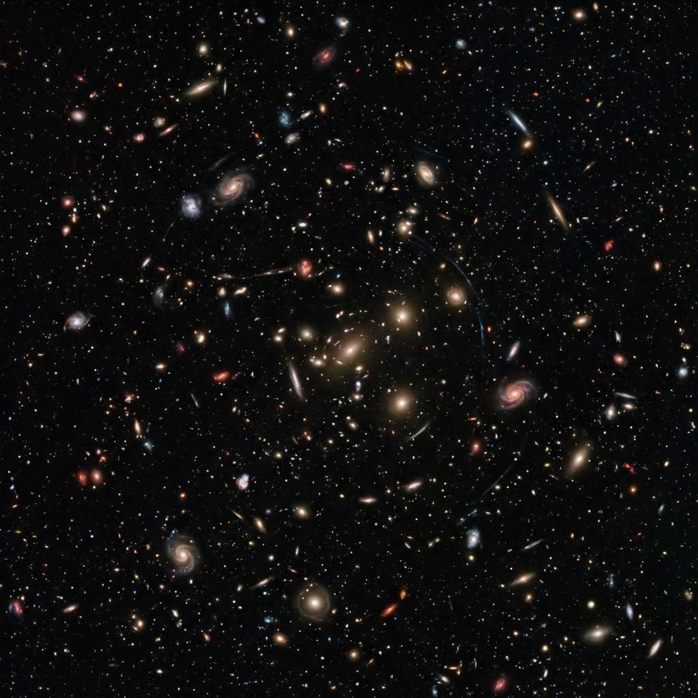

08
一切的总和——宇宙
地理概念：宇宙尺度
- 银河系之外，还有无数个像它一样的星系（河外星系）。
- 所有这些物质、能量、时间和空间的总和，就是宇宙。
图片描述：哈勃深空场

"这张照片里，每一个亮点都不是一颗星星，而是一个像银河系一样的星系！宇宙就是由这无数个'亮点'组成的。"
趣味小知识：光年的距离
- 宇宙太大了，我们用"公里"已经量不过来了，改用"光年"（光走一年的距离）。而且，宇宙正在不断地膨胀变大。